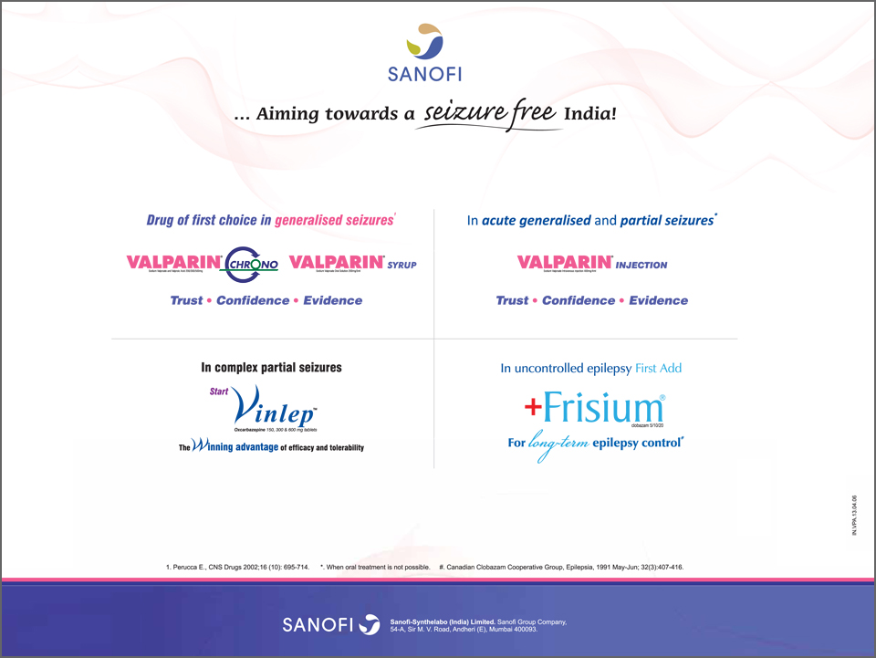

-
Krishna Institute of Medical Sciences
Epilepsy affects approximately 70 million people around the globe. India accounts for 10–20% of the global burden of epilepsy. KIMS is showing the way forward in epilepsy care in India.
The neurosurgery team at KIMS performs more than 1200 neurosurgical procedures every year. The Neurosurgery Department provides a full range of neurosurgery specialty services, including treatment planning, surgery, supporting therapies, and rehabilitation. Superspeciality neurosurgery services offered at KIMS are described below:
KIMS has one of the largest and most complete programs for brain tumor treatment in the country. The multidisciplinary neuro-oncology team has expertise in complicated surgeries for brain tumors including gliomas, meningiomas, acoustic neuromas, pituitary tumors, and skull-base tumor metastases and in X-Knife radiosurgery to optimize radiation therapy for brain tumors.
The Spine Institute offers the most sophisticated spine imaging technology. To detect any neurological injury intra-operatively, CT scan and continuous realtime electrophysiology monitoring ensures the safest possible result. Image-guided diagnostic and therapeutic procedures, including nerve blocks, functional discography, and vertebroplasties are also available.
The multi disciplinary team offers a range of treatment options–aneurysmal` surgery, surgery for arteriovenous malformations, carotid endarterectomy, stenting and decompressive craniectomy for large strokes. They also perform minimally invasive techniques, like aneurysm coiling.
Apart from functional neurosurgery for treating epilepsy, the neurosurgery department maintains an active program in functional neurosurgery for movement disorders such as Parkinson’s disease, essential tremor, and dystonia. Deep Brain Stimulation (DBS) is performed for patients with advanced Parkinson’s disease, essential tremor or dystonia.
The radiosurgery system is designed to treat tumors anywhere in the brain with sub-millimeter accuracy. It can treat intracranial and spinal tumors.
The team can perform advanced operative techniques, including microsurgery, for the treatment of infants and children with brain tumors, hydrocephalus, vascular disorders, head and spine injuries, myelomeningocele, and other congenital malformations and epilepsy surgery.
All types of intracranial and spinal endoscopic procedures are performed at the institute.
The team has the expertise to treat recent injuries to the peripheral nervous system, nerve tumors, and entrapment syndromes. Surgical management including intraoperative nerve monitoring, nerve grafting, and nerve decompression are used to repair nerves.
The pain management facilty offers state-of-the-art pain relief treatment and education to patients with acute and chronic pain. Procedures used include placement of spinal-cord stimulators, percutaneous rhizotomy, Dorsal root entry zone (DREZ) lesions, etc.
The neurotrauma service provides acute neurosurgical care and operative care for head-injuries.
The Neurorehabilitation Center at KIMS offers both inpatient and outpatient services with the help of an experienced team of physiotherapy specialists.

- 
Contents
- Initial monotherapy with levetiracetam fails more frequently than monotherapy with valproate or oxcarbazepine:An enlightening evidence
- Sodium valproate:A gold standard for the treatment of childhood epilepsy
- Superior efficacy of sodium valproate IV reported in acute seizures and status epilepticus
- Clobazam: An effective long-term treatment option for Lennox-Gastaut syndrome
- Hospital coverage:Krishna Institute of Medical Sciences
- Oxcarbazepine:A valuable treatment option for partial-onset seizures in children
- Pregabalin and methylcobalamin combination for neuropathic pain:The Indian scenario
- Important aspects of epilepsy management:during pregnancy
- Neurology News
- Neurology Quiz
News Digest

ECG should be considered in patients with refractory epilepsy
Analysis of electrocardiogram (ECG) monitoring in patients with refractory epilepsy revealed significant differences in heart rate between ictal and pre-ictal states, between ictal and post-ictal states, and between pre- and post-ictal states. Hence, ECG might be helpful to detect serious cardiac abnormalities in patients with refractory epilepsy.
J Res Med Sci. 2013;18(Suppl 1):S32–4.

Use of gabapentin in pregnancy is not associated with increased risk of major malformations
A prospective study of pregnancy outcomes in 223 pregnant women who were exposed to gabapentin and 223 pregnant women who were unexposed to gabapentin reported that gabapentin use in pregnancy was not associated with increased risk for major malformations.
Epilepsy Behav. 2013;26(1):109–13.

A portable automatic device for the detection of generalized tonicclonic seizures
Increased S100B protein levels in cerebrospinal fluid may be associated with the neuronal damage following central nervous infections.
Epilepsia. 2013;54(4):e58–61.
Updates